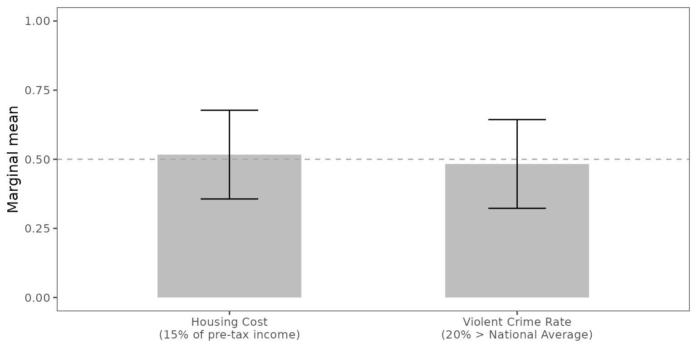
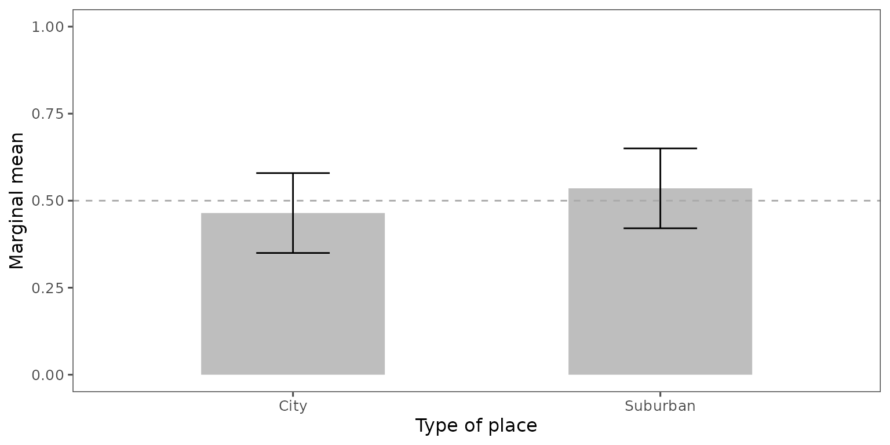

7. Explore further
07-explore.RmdThe choice-level analysis will allow researchers to examine many more questions under-investigated in the literature. This article explains some possible avenues for fruitful research.
7.1 Load the projoint package and the other necessary package
As in the previous articles, we use the already wrangled and cleaned data named “out1_reshaped.” To see what the attribute IDs and level IDs means, you can type:
out1_arranged@labels## # A tibble: 24 × 4
## attribute level attribute_id level_id
## <chr> <chr> <chr> <chr>
## 1 Housing Cost 15% of pre-tax income att1 att1:leve…
## 2 Housing Cost 30% of pre-tax income att1 att1:leve…
## 3 Housing Cost 40% of pre-tax income att1 att1:leve…
## 4 Presidential Vote (2020) 50% Democrat, 50% Republican att2 att2:leve…
## 5 Presidential Vote (2020) 30% Democrat, 70% Republican att2 att2:leve…
## 6 Presidential Vote (2020) 70% Democrat, 30% Republican att2 att2:leve…
## 7 Racial Composition 50% White, 50% Nonwhite att3 att3:leve…
## 8 Racial Composition 75% White, 25% Nonwhite att3 att3:leve…
## 9 Racial Composition 90% White, 10% Nonwhite att3 att3:leve…
## 10 Racial Composition 96% White, 4% Nonwhite att3 att3:leve…
## # ℹ 14 more rows7.1 Examine trade-offs
You may be interested in how people make a choice when they face trade-off options. For example, on the one hand, they may want to live in an inexpensive house. On the other hand, they may prefer to avoid living in an area with a high crime rate. Which of these two options would they prefer? You can compare these two options directly. For the customization of the figure, see Visualize MMs or AMCEs, Choice-level analysis
qoi_1 <- set_qoi(
.structure = "choice_level",
.att_choose = "att1",
.lev_choose = "level1",
.att_notchoose = "att6",
.lev_notchoose = "level2"
)
mm1 <- projoint(.data = out1_arranged,
.qoi = qoi_1,
.structure = "choice_level",
.ignore_position = TRUE)
plot(mm1,
.labels = c("Housing Cost\n(15% of pre-tax income)",
"Violent Crime Rate\n(20% > National Average)")) +
labs(y = "Marginal mean",
x = NULL) +
coord_cartesian(ylim = c(0, 1)) +
geom_hline(yintercept = 0.5,
linetype = "dashed",
color = "darkgray")
6.1 Set multiple levels for the attribute of interest
You may be interested in measuring the marginal means of choosing more than one level. For example, you may want to estimate the marginal mean of choosing “City, more residential area” OR “City, downtown area” as opposed to “Suburban, only houses” OR “Suburban, downtown area”. Then, you can run the following code:
qoi_2 <- set_qoi(
.structure = "choice_level",
.att_choose = "att7",
.lev_choose = c("level2", "level3"),
.att_notchoose = "att7",
.lev_notchoose = c("level5", "level6")
)
mm2 <- projoint(.data = out1_arranged,
.qoi = qoi_2,
.structure = "choice_level",
.ignore_position = TRUE)
plot(mm2,
.labels = c("City", "Suburban")) +
labs(y = "Marginal mean",
x = "Type of place") +
coord_cartesian(ylim = c(0, 1)) +
geom_hline(yintercept = 0.5,
linetype = "dashed",
color = "darkgray")